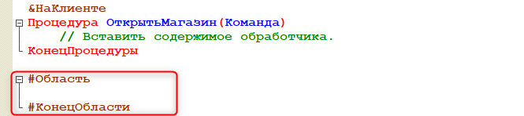
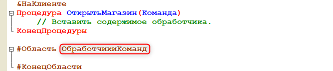

Тема занятия – реализация автоматического создания заказов от покупателей случайным образом.
Заказ должен поступать в тот момент, когда магазин открыт. Когда магазин открыт, поступают заказы, которые игрок обрабатывает, проверяя наличие товара, и получает прибыль за выполненные заказы.
В рамках этого занятия мы выполним 3 задачи:
Первая задача заключается в том, чтобы подготовить начальную страницу. Для реализации механизма "Открыть магазин" потребуется создать специальный интерфейс, который будет отображаться на начальном экране аналогично тому, что было рассмотрено в рамках первого занятия (рис. 7.1).
Рис. 7.1. Пример начального экрана
Такой интерфейс называется "Форма". Формы бывают разных видов: одни связаны со справочниками, другие – с документами, третьи – с обработками, бизнес-процессами и так далее. Но для решения данной задачи потребуется форма, которая ни с чем не связана – это общая форма.
Общая форма – это форма, которая не принадлежит какому-либо объекту конфигурации, а решает собственную задачу. |
Для того чтобы добавить общую форму, необходимо развернуть ветку "Общие", далее нажать правой кнопкой мыши на "Общие формы" и выбрать "Добавить" (рис. 7.2).
Рис. 7.2. Добавление общей формы
В конструкторе общих форм укажем имя формы – "НачальнаяСтраница". После ввода имени формы необходимо нажать на кнопку "Готово" (рис. 7.3).
Рис. 7.3. Работа в конструкторе общих форм
В данной форме потребуется определить название механизма, а также создать кнопку для открытия магазина.
Для того чтобы указать название магазина, нужно создать надпись на форме. Надпись можно создать через добавление нового элемента в редакторе формы. Для этого нажмем на плюсик и выберем в списке элементов "Декорация – Надпись" (рис. 7.4).
Рис. 7.4. Добавление надписи
"Декорация – Надпись" нужна для того, чтобы отображать текст на форме. |
Имя декорации – "НазваниеМагазина" (рис. 7.5).
Рис. 7.5. Указание имени декорации
Заголовок – это то, что будет видеть игрок. |
В заголовке укажем название, соответствующее тематике магазина. В рамках курса – это зоомагазин "Бетховен".
Удобнее будет указать заголовок для декорации через отдельное окошко, с помощью которого можно настроить формат надписи. Нажмем на кнопку "Открыть" в свойстве "Заголовок" (рис. 7.6).
Рис. 7.6. Редактирование заголовка декорации
В окне "Строки на разных языках" выберем "Форматированная строка", а также очистим поле с текстом (рис. 7.7).
В режиме редактирования "Форматированная строка" намного больше настроек, благодаря которым можно изменять размер текста, его цвет, редактировать начертание и многое другое.
В поле для ввода текста укажем название магазина – "Зоомагазин “Бетховен”", а также изменим размер текста. После изменения текста заголовка и его размера нажмем на кнопку "ОК" (рис. 7.8).
Рис. 7.7. Изменение формата строки |
Рис. 7.8. Настройка заголовка декорации |
В результате "Декорация – Надпись" отобразится на форме (рис. 7.9).
Рис. 7.9. Отображение заголовка на форме
Вторая задача сводится к тому, чтобы определить кнопку, при нажатии на которую будет открываться магазин.
Кнопка – это то, что видит и на что нажимает игрок. Команда – это объект конфигурации, с помощью которого разработчик может описывать действия, предназначенные для выполнения пользователем. |
С точки зрения разработчика, необходимо добавить команду.
Перейдем на вкладку "Команды" в правом верхнем окне и на вкладке "Команды формы" с помощью плюсика добавим новую команду (рис. 7.10).
Рис. 7.10. Добавление новой команды
Имя новой команды – "ОткрытьМагазин" (рис. 7.11).
Рис. 7.11. Настройка имени команды
Далее определим связанную с командой кнопку в интерфейсе. Для этого перенесем команду на форму, зажав ее левой кнопкой мыши (рис. 7.12).
Рис. 7.12. Перенос команды на форму
Кнопка должна располагаться в низу формы. Ее можно переместить с помощью кнопок навигации (рис. 7.13).
Рис. 7.13. Перемещение кнопки по форме
Следующим шагом нужно определить программную логику созданной кнопки. В свойствах команды укажем действие для команды с помощью кнопки "Открыть". Кнопка нажимается на стороне клиента, поэтому сделаем событие "НаКлиенте" (рис. 7.14).
Рис. 7.14. Создание обработчика нажатия на кнопку
|
Клиентская часть – это то, что видит игрок у себя на экране. |
В модуле формы появилась процедура, которая прежде всего является обработчиком команды.
Подобных обработчиков в рамках начальной формы будет несколько, поэтому необходимо определить область для обработчиков команд.
Для этого в модуле, ниже процедуры, напишем конструкцию "#Обл" – от слова "область" – и нажмем сочетание клавиш Ctrl+Q.

Далее необходимо указать имя области – "ОбработчикиКоманд".

Затем перенесем процедуру "ОткрытьМагазин" в созданную область.
В данной процедуре необходимо описать вызов алгоритма, который будет генерировать посетителей и их заказы. Для начала создадим такую процедуру и после этого вернемся в модуль формы, чтобы ее вызвать.
Третья задача заключается в том, чтобы создать алгоритм генерации новых посетителей и их заказов.
Обработку генерации посетителей нужно определить в таком месте программы, чтобы к ней можно было обращаться из других модулей, а также вызывать данный обработчик с определенной периодичностью, чтобы имитировать заказы клиентов, например, раз в одну минуту или раз в тридцать секунд.
Для реализации данного механизма потребуется создать "Общий модуль".
Общий модуль – это модуль, в котором можно определять процедуры и функции, часто вызываемые в программе. |
Как и в случае с "Общими формами", "Общие модули" не привязаны к конкретному механизму. Эти модули можно вызывать из других модулей и описывать в них общий функционал.
В рамках данной задачи в общем модуле будет описана процедура – генератор посетителей, в которой программно, случайным образом будут создаваться посетители и их заказы со случайным товаром и случайным количеством этого товара.
Добавим общий модуль. Как и "Общие формы", он находится в ветке "Общие" (рис. 7.15).
Рис. 7.15. Добавление общего модуля
Укажем имя общего модуля – "ФоновыеПроцедуры" (рис. 7.16).
Рис. 7.16. Имя общего модуля
Модуль назван так, потому что в дальнейшем сценарий генерации посетителей, описанный здесь, будет вызываться с определенной периодичностью в фоновом режиме.
Программная логика в данном модуле должна создавать записи в базе данных, должна происходить работа с данными и прикладными объектами.
Директива, способная на такое взаимодействие, – "Сервер". По умолчанию, галочка "Сервер" уже установлена в настройках модуля (рис. 7.17).
Рис. 7.17. Проверка директивы компиляции
Однако сценарий, описанный в этом модуле, будет вызываться с клиента, так как именно на клиенте игрок запускает игру, нажимая на кнопку "Открыть магазин". После нажатия на кнопку команда должна переходить в модуль "Фоновые процедуры".
Чтобы реализовать такую возможность, необходимо поставить галочку "Вызов сервера" в настройках модуля (рис. 7.18).
Рис. 7.18. Установка галочки "Вызов сервера"
Если галочку не поставить, то будет возникать ошибка при проверке работоспособности алгоритма. |
Определим в модуле процедуру "ГенераторПосетителей".
Для того чтобы эту процедуру можно было вызвать из другого модуля, в данном случае из модуля формы, необходимо после имени процедуры указать ключевое слово "Экспорт".
Теперь можно дописать вызов этой процедуры в модуле общей формы.
Чтобы в него вернуться, нужно найти в ветке "Общие" общую форму "НачальнаяСтраница" и нажать по ней два раза левой кнопкой мыши.
Рис. 7.19. Переход к общей форме "НачальнаяСтраница"
В модуле формы "НачальнаяСтраница" в процедуре "ОткрытьМагазин" необходимо вызвать процедуру "ГенераторПосетителей".
В рамках данной клиентской процедуры никаких других вызовов не будет – только переадресация программной логики в общий модуль.
Вернемся в общий модуль "ФоновыеПроцедуры" и опишем алгоритм генерации посетителей.
В процедуре "ГенерацияПосетителей" нужно определить логику на поиск случайного товара и создание случайного заказа этого товара на случайное количество.
Для начала необходимо узнать, сколько товарных позиций учитывается в игровом процессе: какие товары есть в справочнике "Товары". Если товар есть в ассортименте, то есть шанс, что его придут покупать.
Нужно получить количество товарных позиций, продаваемых в магазине. Все товары пронумерованы, и в дальнейшем товар будет выбираться именно по порядковому номеру.
В пользовательском режиме все товары пронумерованы с помощью реквизита "Код" (рис. 7.20).
Рис. 7.20. Нумерация товаров в пользовательском режиме
Однако в коде присутствуют лишние лидирующие нули. Избавимся от них, чтобы остались только номера товарных позиций (1, 2 и 3). Таким образом, по коду можно будет посчитать количество товаров и определить случайный товар.
Чтобы избавиться от лидирующих нулей, откроем справочник "Товары", перейдем на вкладку "Данные" и укажем тип кода – "число" (рис. 7.21).
Рис. 7.21. Изменение типа кода в справочнике "Товары"
Таким образом, лидирующие нули у порядковых номеров исчезнут. Теперь можно вернуться к программированию.
Первое, что нужно сделать, – это посчитать количество товарных позиций в справочнике "Товары". Изначально количество товаров неизвестно, поэтому присвоим переменной "ВсегоТоваров" значение 0.
После этого нужно получить список товаров из соответствующего справочника.
Данные будут выбираться до тех пор, пока есть что выбирать. Следовательно, необходимо прокрутить всю выборку данных, пока она есть. Для этой цели подойдет цикл "Пока" – пока есть что анализировать, будем увеличивать счетчик товаров.
Второе, что нужно сделать, – это случайным образом получить товарную позицию из всего списка товаров. Для этого потребуется генератор случайных чисел.
Далее нужно случайным образом получать номер товарной позиции и анализировать: продается данный товар, или он нужен для внутреннего потребления?
Если это товар для внутреннего потребления, то необходимо продолжать поиск случайного товара. В противном случае остановиться на выборе.
В результате выполнения цикла "Пока" будет найдена товарная позиция, которую точно можно продать клиенту.
На основании этого будем регистрировать новый заказ – создавать новый бизнес-процесс.
В дальнейшем процедура будет доработана, так как наценка на товар будет динамически изменяться в зависимости от рейтинга игрока: чем выше рейтинг, тем выше наценка.
На данный момент итоговый вариант процедуры выглядит следующим образом:
Обновим конфигурацию базы данных и запустим пользовательский режим.
Для того чтобы проверить реализованный функционал, нужно нажать на кнопку "Открыть магазин" на начальном экране. Но в данный момент никакого начального экрана в пользовательском режиме не отображается (рис. 7.22).
Рис. 7.22. Отсутствие начального экрана
Закроем пользовательский режим и вернемся в конфигуратор, чтобы добавить начальный экран.
В дереве конфигурации нажмем правой кнопкой мыши по конфигурации и в списке выберем пункт "Открыть рабочую область начальной страницы", чтобы вывести на начальный экран общую форму "НачальнаяСтраница" (рис. 7.23).
Рис. 7.23. Переход к настройкам начальной страницы
Укажем в качестве шаблона начальной страницы "Одна колонка" (рис. 7.24).
Рис. 7.24. Выбор шаблона начальной страницы
Далее через кнопку "Добавить" добавим отображение общей формы "НачальнаяСтраница". Подтвердим выбор формы, нажав на кнопку "ОК" (рис. 7.25).
Рис. 7.25. Выбор формы
Обновим конфигурацию базы данных и запустим пользовательский режим, чтобы проверить реализованный функционал.
В результате на начальной странице отобразилось название магазина, а также кнопка "Открыть магазин" (рис. 7.26).
Рис. 7.26. Начальный экран
Сейчас открытие магазина сопровождается одним моментальным заказом от одного клиента. Задачу непрерывного посещения покупателями магазина через определенный интервал решим позже.
Нажмем на кнопку "Открыть магазин" пять раз, чтобы имитировать посещение магазина пятью покупателями (рис. 7.27).
Рис. 7.27. Создание заказов через кнопку "Открыть магазин"
Перейдем к списку заказов, чтобы проверить работу кнопки (рис. 7.28).
Рис. 7.28. Список заказов
В результате в списке заказов появилось еще пять новых заказов со случайными товарами и количеством, а также суммой, рассчитанной с учетом наценки.
Убедимся, что для каждой новой задачи был автоматически создан новый этап заказа (рис. 7.29).
Рис. 7.29. Список этапов заказов
На этом седьмое занятие окончено!
На этом занятии мы реализовали автоматическое создание заказов, а также начали процесс реализации открытия магазина.
На следующем занятии мы научимся закрывать магазин и поработаем над интерфейсом, поскольку сейчас отображается очень много лишних полей в пользовательском режиме.
Это нужно запомнить |
|
|
Общая форма – это форма, которая не принадлежит какому-либо объекту конфигурации, а решает собственную задачу. "Декорация – Надпись" нужна для того, чтобы отображать текст на форме. Заголовок элемента формы – это то, что будет видеть игрок. Кнопка – это то, что видит и на что нажимает игрок. Команда – это объект конфигурации, с помощью которого разработчик может описывать действия, предназначенные для выполнения пользователем. |